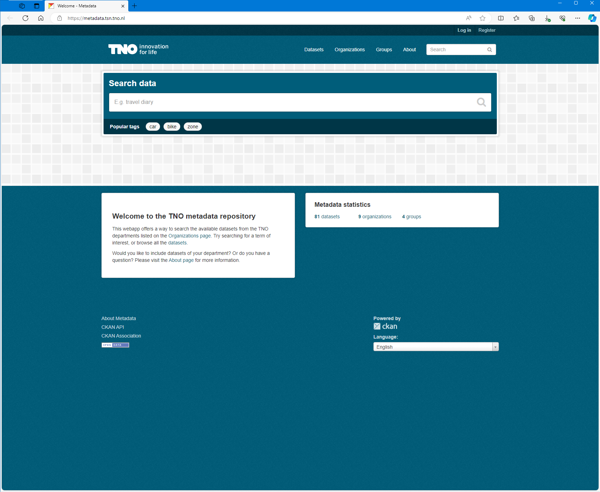

CKAN data portal
In my role as data scientist, we saw a great need at TNO to structure data sets in a logical manner. The question asked was how we could best enhance the findability and reusability within TNO of data sets. Our proposed solution was the deployment of CKAN; an open-source software solution to host your datafiles. We implemented it in a very straight-forward manner using Docker and Azure.
